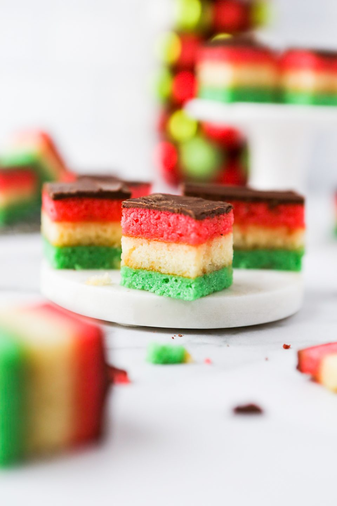

Gluten Free Venetian Cookies
Gluten-Free Venetian Cookies

Gluten-Free Apple Venetian Cookies
Ingredients
- ▢ 8 Ounces Almond Paste
- ▢ 1 ½ Cups Softened Butter - Equal to 3 sticks
- ▢ 3 Large Eggs (Separated) - Separate the yolks and whites
- ▢ 1 Cup Granulated Sugar
- ▢ 1 Teaspoon Almond Extract
- ▢ 2 Cups Gluten-Free Flour Blend, Sifted - Bob's Red Mill 1-to-1 or Cup4Cup are good options
- ▢ ¼ Teaspoon Salt
- ▢ Green Food Coloring - 10-15 drops
- ▢ Red Food Coloring - 10-15 drops
- ▢ 1 Jar Apricot Preserves - Most jars of preserves come in about 12 ounces
- ▢ ½ Cup Semi-Sweet Chocolate Chips - or a 3-ounce semi-sweet chocolate square
Instructions
- PBreak up the almond paste into a large mixing bowl. Add butter, sugar, egg yolk, and almond extract.
Mix until light and fluffy (4-5 minutes).
- Sifted flour means to sift the flour and then measure. Sift the flour over parchment paper and then
scoop into the measuring cup. Level off. Add the sifted flour and salt to the wet ingredients. Mix until
it's well-incorporated and light and fluffy.
- In a separate bowl, whip the eggs whites until stiff peaks are formed. Fold the egg whites into the
batter until they're well-incorporated.
- Divide the batter into three equal portions (about 1 ½ cups each – or you can use a kitchen scale to
get exact measurements).
- Add green food coloring to one portion. Add red food coloring to another portion. Leave the last portion
white.
- Preheat oven to 350°.
- Each of the red, green, and white batters will need to be baked separately. If you don't have three 9×13
inch baking dishes then it's OK to bake these one at a time. Line the pan/baking dish with parchment
paper so that it comes up on at least two of the sides.
- Using a spatula, spread the batter evenly on the bottom of the pan. Bake in the oven for 15 minutes
until the edges are golden brown.
- Let the cake cool for a few minutes and then remove from the baking dish (pull up on the parchment paper
sling you made) and place on a cooling rack. If you only have one pan then wait until baking dish is
cooled down a bit before adding the next batter in. The heat in the dish will melt the butter in the
batter making it harder to spread.
- After all the cakes are baked then let them completely. While they are cooling, you can make your
apricot jelly "glue".
- In a small saucepan on the stove, heat the apricot preserves. This will help to separate the jelly
portion from the chunks of apricot in the preserves. Then strain through a sieve so you it is a smooth
apricot jelly.
- Place the green cake on top of parchment paper on a flat cookie sheet (something without edges on it). I
like to use my cookie sheet turned upside down.
- Evenly spread half of the apricot jelly on the top of the green cake making sure to get it all the way
to the edges.
- Place the white cake on top of the green cake, lining up the edges. Don't worry if they're uneven
beucase you'll trim the edges later.
- Evenly spread the remaining apricot jelly on the top of the white cake making sure to get it all the way
to the edges.
- Place the red cake on top of the white cake, lining up the edges.
- Cover the layered cake in plastic wrap. Place a few heavy items on top of the cake to weight it down
(like a couple of stacked glass baking dishes). Refrigerate overnight.
- After the cakes have been weighted down and refrigerated overnight, remove the plastic wrap. Next you'll
need to melt the semi-sweet chocolate so that you can spread it on top of the cake. You can do this
either in the microwave or on the stovetop.
- Spread the melted chocolate on top of the cake. Refrigerate until the chocolate hardens.
- Remove from the refrigerator and carefully trim the edges. Then cut it into 1-inch strips. Then cut
those strips ito 1-inch pieces, making small square cookies.
Notes
- These freeze really well!!
- Don’t throw away the edges you trimmed off – those are perfect pieces for taste testing.